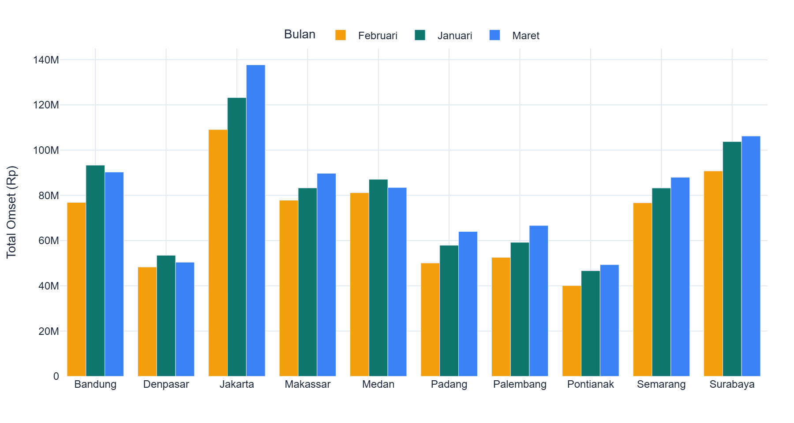
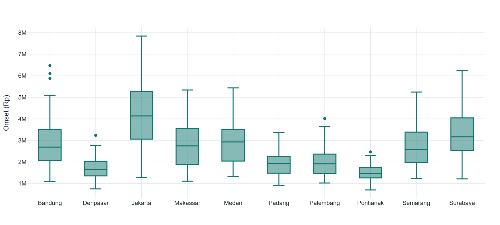
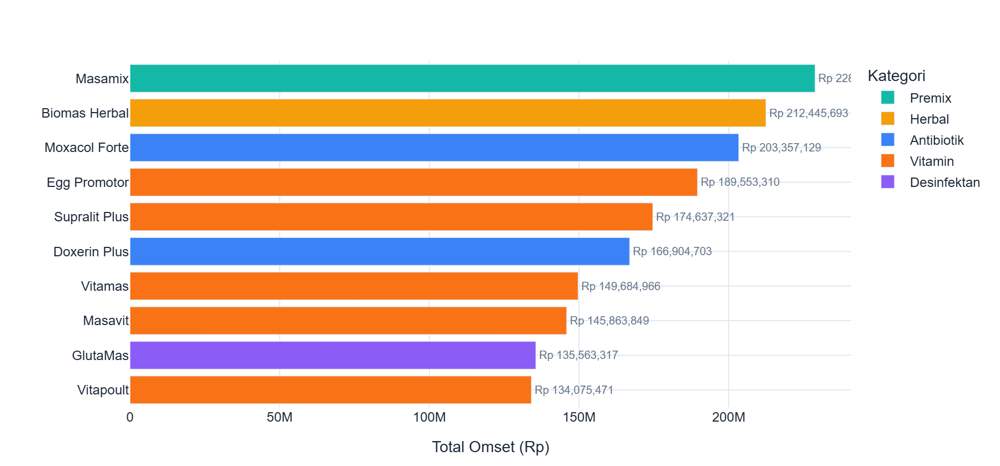
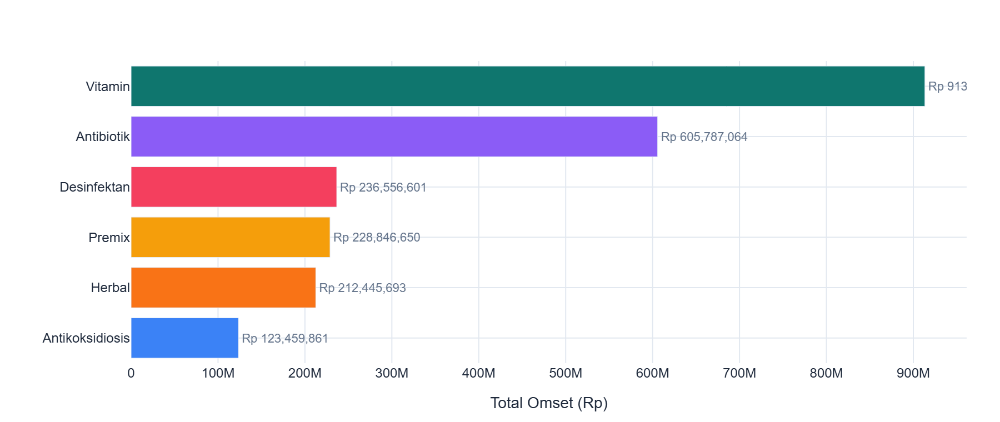
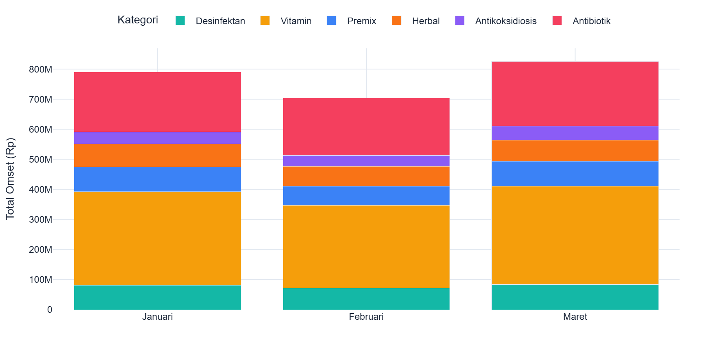
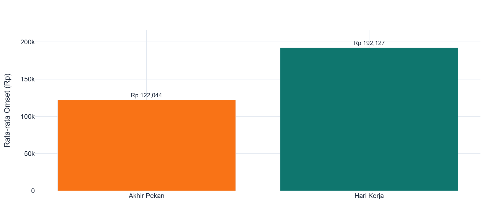
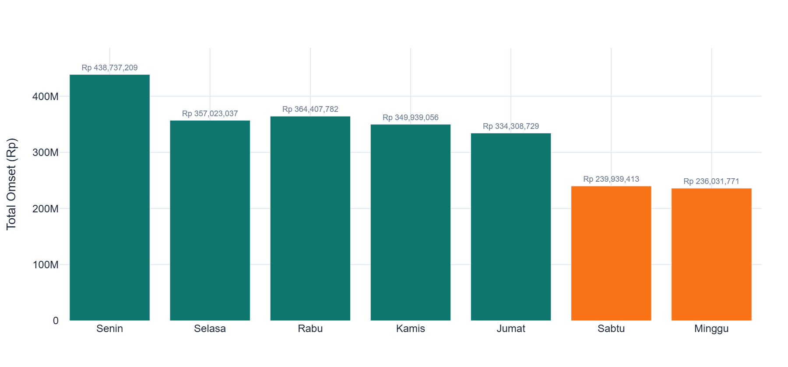
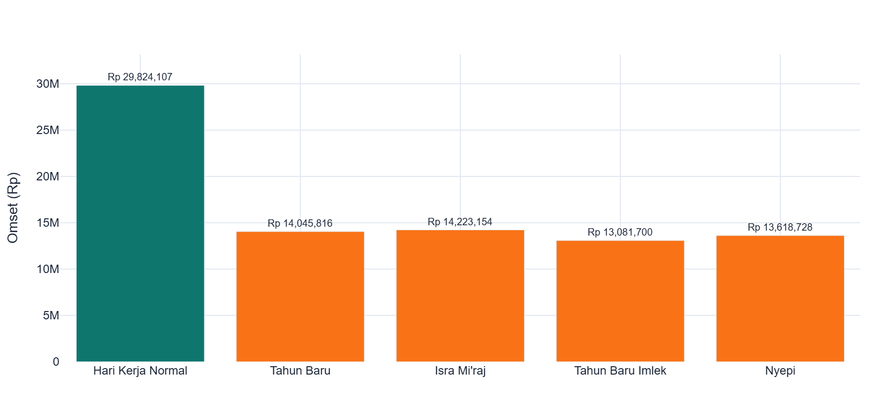
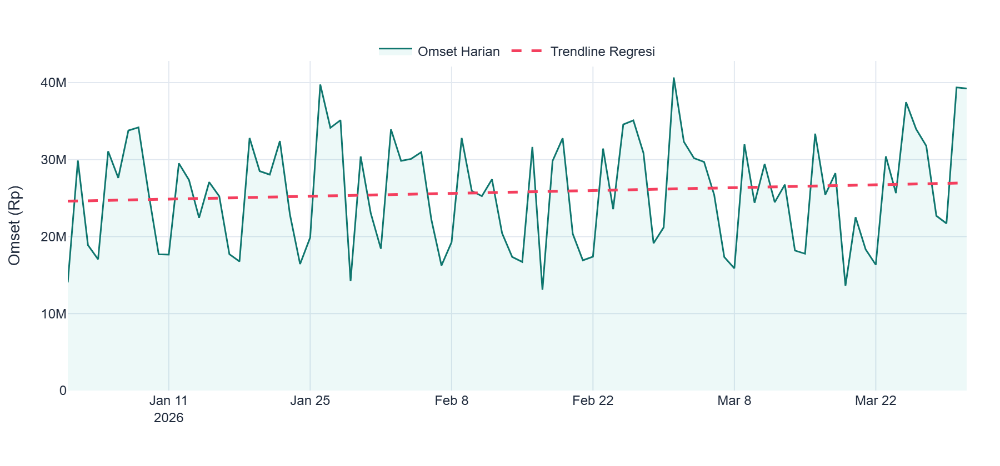
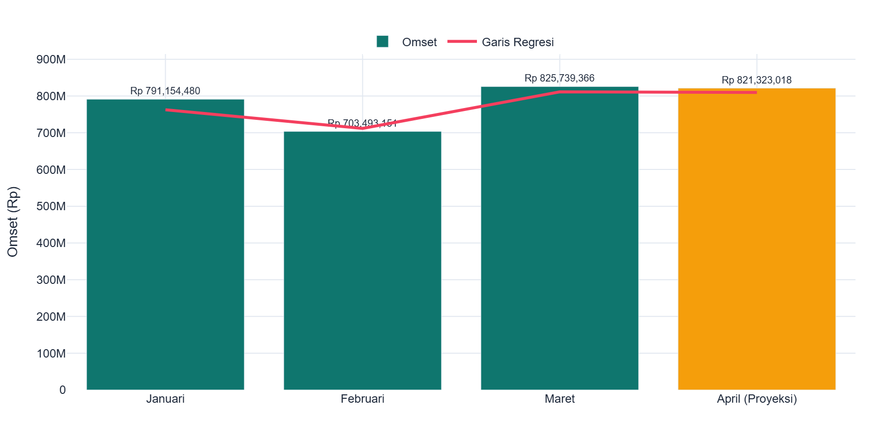

Eksplorasi data lebih lanjut dengan visualisasi interaktif Streamlit
🔗 Buka Dashboard LivePT Mensana Aneka Satwa mencatat total omset Rp 2.320.386.997 dari 10 cabang distributor di seluruh Indonesia selama Q1 2026. Dari jumlah tersebut, 15 produk unggulan terjual sebanyak 20.892 unit selama 90 hari aktif penjualan.
Data penjualan dihasilkan dari simulasi 10 cabang distributor PT Mensana Aneka Satwa selama 3 bulan (Januari - Maret 2026). Data di-generate menggunakan script Python (generate_daily_data.py) dengan parameter realistis berdasarkan karakteristik bisnis distribusi obat/vitamin ternak di Indonesia.
np.random.seed(42) untuk reproducibility| Cabang | Kode Lokal | Nama Lokal |
|---|---|---|
| Medan | MED-V-001 | Supralit Anti Stress |
| Jakarta | JKT-VA-001 | Supralit Powder |
| Bandung | BDG/01/V | Anti-Stress Powder |
Dibuat tabel mapping yang menghubungkan kode lokal per cabang ke kode standar perusahaan (MSV-001, MSA-001, dll) untuk memungkinkan analisis konsolidasi di tingkat perusahaan.
Omset Q1 2026 menunjukkan pola fluktuatif dengan recovery kuat di Maret.
| Bulan | Total Omset | Hari | Rata-rata/Hari | Pertumbuhan |
|---|---|---|---|---|
| Januari | Rp 791.154.480 | 31 | Rp 25.521.112 | - |
| Februari | Rp 703.493.151 | 28 | Rp 25.124.755 | -11,1% |
| Maret | Rp 825.739.366 | 31 | Rp 26.636.754 | +17,4% |

Pola serupa terjadi di hampir semua cabang: turun di Februari, naik di Maret. Jakarta konsisten sebagai kontributor terbesar.
Jakarta dan Surabaya menyumbang 28,9% total omset dari hanya 2 dari 10 cabang. Sementara 4 cabang terbawah menyumbang 27,5%.
| Rank | Cabang | Total Omset | % Total | Status |
|---|---|---|---|---|
| 1 | Jakarta | Rp 369.977.238 | 15,9% | Top Performer |
| 2 | Surabaya | Rp 300.746.237 | 13,0% | Top Performer |
| 3 | Bandung | Rp 260.462.839 | 11,2% | Good |
| 4 | Medan | Rp 251.699.464 | 10,8% | Good |
| 5 | Makassar | Rp 250.787.565 | 10,8% | Good |
| 6 | Semarang | Rp 247.926.039 | 10,7% | Good |
| 7 | Palembang | Rp 178.443.705 | 7,7% | Perlu Peningkatan |
| 8 | Padang | Rp 172.000.578 | 7,4% | Perlu Peningkatan |
| 9 | Denpasar | Rp 152.216.908 | 6,6% | Perlu Peningkatan |
| 10 | Pontianak | Rp 136.126.424 | 5,9% | Perlu Peningkatan |

Top 5 produk menyumbang 43,5% total omset. Masamix (Premix) menjadi produk terlaris meski hanya 1 produk di kategorinya, didukung harga satuan tertinggi (Rp 167.000).

Vitamin mendominasi dengan 39,4% dari 6 produk, diikuti Antibiotik 26,1%. Premix meski hanya 1 produk menyumbang 9,9% karena harga satuan tinggi.
| Kategori | Total Omset | % Total | Jumlah Produk |
|---|---|---|---|
| Vitamin | Rp 913.291.128 | 39,4% | 6 |
| Antibiotik | Rp 605.787.064 | 26,1% | 4 |
| Desinfektan | Rp 236.556.601 | 10,2% | 2 |
| Premix | Rp 228.846.650 | 9,9% | 1 |
| Herbal | Rp 212.445.693 | 9,2% | 1 |
| Antikoksidiosis | Rp 123.459.861 | 5,3% | 1 |


Penjualan pada hari kerja (Sen-Jumat) 48% lebih tinggi dari akhir pekan. Senin memiliki omset tertinggi karena efek restocking awal pekan, sementara Jumat sedikit lebih rendah karena pelanggan menunda pembelian menjelang weekend.
| Tipe Hari | Rata-rata Omset/Hari | Selisih |
|---|---|---|
| Hari Kerja (Sen-Jum) | Rp 28.500.000 | baseline |
| Akhir Pekan (Sab-Ming) | Rp 14.700.000 | -48,4% |

| Hari | Index (Senin=100) | Keterangan |
|---|---|---|
| Senin | 100 | Tertinggi — restocking awal pekan |
| Selasa - Kamis | 96 - 98 | Stabil |
| Jumat | 88 | Pre-weekend dip |
| Sabtu | 57 | Turun drastis |
| Minggu | 40 | Terendah |

Hari libur nasional menyebabkan penurunan omset 45-49% dari rata-rata hari kerja normal. Efek recovery terjadi 1-2 hari setelah libur, menunjukkan adanya pembelian tertunda.
| Hari Libur | Omset | Penurunan |
|---|---|---|
| Tahun Baru (1 Jan) | Rp 14.045.816 | -45,5% |
| Isra Mi'raj (29 Jan) | Rp 14.223.154 | -44,9% |
| Tahun Baru Imlek (17 Feb) | Rp 13.081.700 | -49,3% |
| Nyepi (19 Mar) | Rp 13.618.728 | -47,2% |

Garis tren menunjukkan pola harian yang bervariasi dengan penyusutan signifikan saat hari libur, namun tren keseluruhan cenderung stabil dengan sedikit naik.

Berdasarkan regresi linear dari data Q1, proyeksi omset April 2026 adalah Rp 821.323.018 dengan tren sedikit naik (+Rp 26.589/hari). Angka ini hampir sama dengan Maret, menunjukkan stabilisasi di level tinggi.
| Bulan | Total Omset | Keterangan |
|---|---|---|
| Januari 2026 | Rp 791.154.480 | Aktual |
| Februari 2026 | Rp 703.493.151 | Aktual |
| Maret 2026 | Rp 825.739.366 | Aktual |
| April 2026 | Rp 821.323.018 | Proyeksi |

| No | Rekomendasi | Prioritas | Estimasi Dampak |
|---|---|---|---|
| 1 | Optimasi 4 cabang bawah (Pontianak, Denpasar, Padang, Palembang) | Tinggi | Peningkatan omset cabang secara signifikan |
| 2 | Pre-stocking sebelum hari libur nasional | Tinggi | Mengurangi kehilangan penjualan saat libur |
| 3 | Promosi weekend untuk meningkatkan penjualan Sabtu-Minggu | Sedang | Meningkatkan omset akhir pekan |
| 4 | Diversifikasi mix produk berdasarkan karakter pasar lokal | Sedang | Omset lebih merata dan sesuai kebutuhan |
| 5 | Review pricing untuk produk margin tinggi | Rendah | Peningkatan margin keuntungan |
| ID | Nama Cabang | Provinsi |
|---|---|---|
| CAB-01 | Medan | Sumatera Utara |
| CAB-02 | Padang | Sumatera Barat |
| CAB-03 | Palembang | Sumatera Selatan |
| CAB-04 | Jakarta | DKI Jakarta |
| CAB-05 | Bandung | Jawa Barat |
| CAB-06 | Semarang | Jawa Tengah |
| CAB-07 | Surabaya | Jawa Timur |
| CAB-08 | Denpasar | Bali |
| CAB-09 | Makassar | Sulawesi Selatan |
| CAB-10 | Pontianak | Kalimantan Barat |
| Kode | Nama Standar | Kategori | Harga |
|---|---|---|---|
| MSV-001 | Supralit | Vitamin | Rp 85.000 |
| MSV-002 | Supralit Plus | Vitamin | Rp 125.000 |
| MSV-003 | Vitapoult | Vitamin | Rp 95.000 |
| MSV-004 | Vitamas | Vitamin | Rp 110.000 |
| MSV-005 | Egg Promotor | Vitamin | Rp 135.000 |
| MSV-006 | Masavit | Vitamin | Rp 105.000 |
| MSA-001 | Colimas | Antibiotik | Rp 78.000 |
| MSA-002 | Doxerin Plus | Antibiotik | Rp 119.000 |
| MSA-003 | Enromas | Antibiotik | Rp 92.000 |
| MSA-004 | Moxacol Forte | Antibiotik | Rp 145.000 |
| MSP-001 | Masamix | Premix | Rp 167.000 |
| MSP-002 | Biomas Herbal | Herbal | Rp 155.000 |
| MSX-001 | Coxy-Mas | Antikoksidiosis | Rp 88.000 |
| MSX-002 | GlutaMas | Desinfektan | Rp 97.000 |
| MSX-003 | Septocid | Desinfektan | Rp 72.000 |